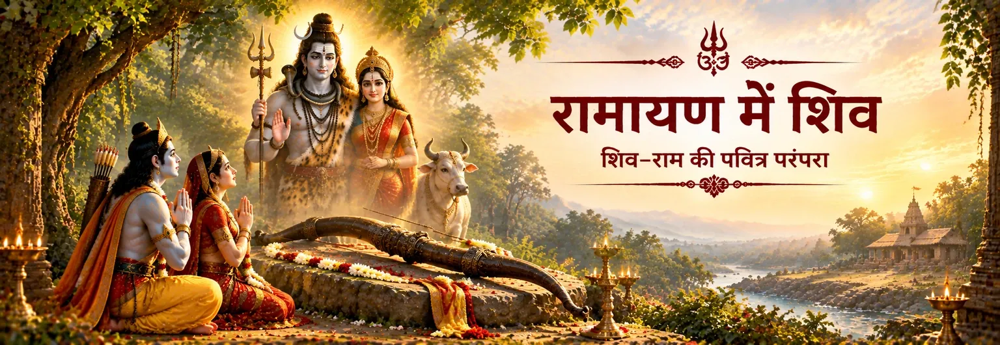

जनक-वंश को सौंपा गया धनुष
जनक बताते हैं कि महान धनुष उनके पूर्वज देवरात को सौंपा गया था और मिथिला के राजघराने में सुरक्षित रखा गया। शिव से उसका संबंध स्वयंवर की परीक्षा को कथा में एक पवित्र आयाम देता है।

शास्त्र और परंपरा
रामायण की परंपरा में शिव अनेक अलग-अलग रूपों में उपस्थित होते हैं—सबसे स्पष्ट रूप से जनक के पास सुरक्षित पवित्र धनुष के माध्यम से और व्यापक रूप से महादेव से जुड़े उल्लेखों के माध्यम से। इन सभी परतों को एक ही प्रसंग मानना उचित नहीं है।
वाल्मीकि रामायण के बालकाण्ड में जनक महान धनुष की परंपरा बताते हैं और राम उसे उठाकर प्रत्यंचा चढ़ाते हैं, जिसके बाद धनुष टूट जाता है। बाद की भक्ति-परंपराएँ, विशेषकर रामचरितमानस, शिव और राम के संबंध को कहीं अधिक स्पष्ट रूप से विकसित करती हैं।
वाल्मीकि रामायण · बालकाण्ड
वाल्मीकि रामायण में शिव से सीधे जुड़े सबसे स्पष्ट प्रसंगों में से एक मिथिला का है, जहाँ जनक महान धनुष की परंपरा बताते हैं।
जनक बताते हैं कि महान धनुष उनके पूर्वज देवरात को सौंपा गया था और मिथिला के राजघराने में सुरक्षित रखा गया। शिव से उसका संबंध स्वयंवर की परीक्षा को कथा में एक पवित्र आयाम देता है।
अनेक राजा उस धनुष को हिला तक नहीं सके थे। राम उसके पास जाते हैं और जनक की प्रतिज्ञा के अनुसार उस महान धनुष को उठाकर प्रत्यंचा चढ़ाते हैं।
जब राम धनुष पर प्रत्यंचा चढ़ाते हैं, तो वह प्रचंड ध्वनि के साथ टूट जाता है। यह क्षण मिथिला प्रसंग का निर्णायक मोड़ बनता है और विवाह-कथा को आगे बढ़ाता है।
मिथिला का शिव-धनुष और बाद की रामेश्वरम् लिंग-परंपरा अलग कथा-परतें हैं। भक्ति की दृष्टि से उन्हें जोड़ा जा सकता है, पर दोनों को एक ही घटना के रूप में नहीं बताना चाहिए।
धनुष से आगे
शिव का संबंध केवल मिथिला के धनुष तक सीमित नहीं है, पर अलग-अलग ग्रंथीय परतों को अलग रखना आवश्यक है।
रामायण के व्यापक धार्मिक शब्द-संसार में शिव से जुड़े नाम, उल्लेख और पवित्र स्थान मिलते हैं। ये संदर्भ एक ही निरंतर शिव-प्रसंग के बजाय महाकाव्य के व्यापक पवित्र क्षितिज का हिस्सा हैं।
मिथिला में शिव केवल नाम से उपस्थित नहीं हैं; उनका महान धनुष स्वयं विवाह-परीक्षा की केंद्रीय पवित्र वस्तु बन जाता है। इसलिए राम का उससे सामना कथा और भक्ति—दोनों दृष्टियों से अर्थपूर्ण है।
बाद का भक्तिपरक साहित्य राम–शिव संबंध को कहीं अधिक स्पष्ट करता है। इसमें ऐसे उपदेश मिलते हैं जहाँ शिव राम की महिमा स्वीकार करते हैं और दोनों दिव्य रूपों के प्रति बिना प्रतिस्पर्धा की भक्ति पर बल दिया जाता है।
इसलिए सबसे उपयोगी पाठ परतों को पहचानकर है: वाल्मीकि महाकाव्य-कथा देते हैं, जबकि बाद के भक्तिपरक ग्रंथ उसके दार्शनिक और धार्मिक अर्थ को विस्तार देते हैं। दोनों का सम्मान करते हुए उन्हें एक ही स्रोत नहीं मानना चाहिए।
शास्त्र और परंपरा
वाल्मीकि के बालकाण्ड में जनक द्वारा महान धनुष का वर्णन और राम द्वारा उसके टूटने का प्रसंग सीधे मिलता है। राम–शिव की पारस्परिक भक्ति की विस्तृत धार्मिक व्याख्या बाद के भक्तिपरक साहित्य में अधिक प्रमुख रूप से विकसित होती है।
यह अंतर इसलिए महत्वपूर्ण है क्योंकि इससे महाकाव्य के मूल स्रोत का सम्मान करते हुए यह भी समझा जा सकता है कि बाद की राम–शिव भक्ति हिंदू पवित्र स्मृति का इतना महत्वपूर्ण हिस्सा कैसे बनी।
Valmiki Ramayana · Bala Kanda 66 · Valmiki Ramayana · Bala Kanda 67 · Ramcharitmanas · Bala Kanda
भक्त के लिए
शिव-धनुष भक्त को रामायण को ऐसे पवित्र संसार के रूप में देखने का अवसर देता है जहाँ दिव्यता के विभिन्न रूप बिना प्रतिस्पर्धा के एक-दूसरे से जुड़े हैं। बाद की राम–शिव परंपरा इसी स्मृति को पारस्परिक श्रद्धा, सेवा और एकता की भाषा में विस्तार देती है।
भक्तों के सामान्य प्रश्न
हाँ। सबसे स्पष्ट प्रसंगों में बालकाण्ड 66–67 हैं, जहाँ जनक शिव से जुड़े महान धनुष का इतिहास बताते हैं और राम उसे उठाकर तोड़ देते हैं।
नहीं। दोनों अलग कथा-परंपराएँ हैं। धनुष मिथिला के विवाह-प्रसंग से जुड़ा है, जबकि रामेश्वरम् का लिंग सेतुबंध और राम द्वारा शिव-पूजा से जुड़ी बाद की तीर्थ-परंपराओं का हिस्सा है।
बालकाण्ड इस संबंध को स्पष्ट भक्तिपरक और धार्मिक आयाम देता है। इसमें शिव द्वारा राम की महिमा का वर्णन और राम-भक्ति तथा शिव-भक्ति के बीच प्रतिस्पर्धा को अस्वीकार करने वाली भावना प्रमुख है।
क्योंकि रामायण परंपरा अलग-अलग ग्रंथों और भक्तिपरक परिवेशों में विकसित हुई। स्रोत की परत बताने से कथा अधिक सटीक रहती है और विभिन्न परंपराओं का सम्मान भी होता है।